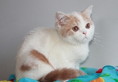
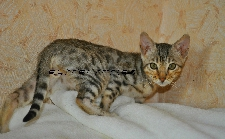
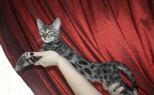

Описание котика:Красивый шотландский котик с прямым
ушком. Упитанный и воспитанный малыш в плюшевой
шубке. Клубный. Голубой мраморный окрас. Возраст 2,5
месяца. Сделана прививка, отлично приучен к
лоточку, кушает сухой корм Роял Канин и натуральную
пищу (курочку, ряженку, кефир, перепелиное
яйцо). Малыш клубный, от породистых родителей с
родословной. Есть документы о происхождении.

Имя котика:Бэримор
Категория котика:Скоттиш страйт
Уровень доброты котика по 5-бальной шкале:★★★★
Стоимость котика:16000₽
Описание котика:Предлагается к продаже
породистый шотландский котик от элитной племенной
пары. В родословной канадские линии. Мальчик
породы скоттиш страйт. Возраст 3,5 мес. Очень редкий
окрас - кремовый арлекин. Клубный! Плюшевая шубка,
большие глазки, будут окрашены в апельсиновый тон,
круглая мордашка, отличный костяк. Глядя на этого
котика видна ПОРОДА! Воспитанный, лоточек без
наполнителя на "отлично". Растет в семье с детьми.
Игривый, контактный котик. Сделаны ВСЕ прививки.
Приезжайте посмотреть на малыша, т.к "в живую" он Вас
просто покорит!
Имя котика:Гермес
Категория котика:Невская маскарадная
Уровень доброты котика по 5-бальной шкале:★★★★★
Стоимость котика:13000₽
Описание котика:Невские маскарадные
очаровательные котята с ярко-голубыми
глазами из профессионального питомника
Жемчуг Невы. Окрасы котят: сил-тебби-поинт, сил-поинт, блю-тебби-поинт
. Котята клубные, с прекрасными породными
данными, с родословной, от красивых
титулованных родителей. Возраст 2 месяца,
выращены с любовью и заботой, к лоточку
приучены, привиты по возрасту. Ласковые котята
для дома и семьи в качестве домашнего любимца, а
также для выставок и разведения.
Имя котика:Норвис
Категория котика:Шотландская вислоухая
Уровень доброты котика по 5-бальной шкале:★★★
Стоимость котика:15000₽
Описание котика:Если Вы цените дружбу, любовь и
красоту и готовы посвятить себя в меру
упитанному, но хулиганистому шотландскому
котенку экстравагантного серебристого
тикированного окраса, он ждет звонка будущих
покладистых хозяев!Котик очень дружелюбный и
общительный, приучен ко всем кошачьим тонкостям
(лоток и когтеточка), но это ему совершенно не
мешает иметь полный пакет документов (метрику о
происхождении и вет. паспорт со всеми прививками).
Таким титулованным родителям, как у него,
могут многие позавидовать!!!
Имя котика:Гуччи
Категория котика:Бенгальская
Уровень доброты котика по 5-бальной шкале:★★★
Стоимость котика:9500₽
Описание котика:Есть 3 очаровательных котенка, 2
котика и одна кошечка. Голубые бенгалы редко
встречаются в пометах. Это один из самых редких окрасов
у бенгалов.Голубые бенгалы имеют фон
металлического серо-голубого цвета с
персиковым отливом на груди и животе, и
рисунок темного серо-синего цвета. Многие люди
, когда впервые видят голубых бенгалов, находят,
что они очень красивы и своеобразны.
Имя котика:Оскар
Категория котика:Мейн-кун
Уровень доброты котика по 5-бальной шкале:★★★★
Стоимость котика:17000₽
Описание котика:Молодой котик дома Фреди
отличные породные данные: большие кисти, пушистый
хвост, большая коробка, крупный кот. Имеет все прививки и
документы, приучен к лотку и когтеточке.
Вырос в обществе кошек и ребенка, поэтому
уживется с другими кошками и детьми.
Имя котика:Лоренс
Категория котика:Абиссинская
Уровень доброты котика по 5-бальной шкале:★★★
Стоимость котика:11000₽
Описание котика:Продам замечательного
клубного чистокровного абиссинского
котенка (мальчик) дикого окраса. Приучен к лотку и
когтеточке. Котенку 3 месяца. Готов к
переезду со всеми необходимыми
документами и инвентарем. Вакцинация
произведена.

Имя котика:Маркус
Категория котика:Бенгальская
Уровень доброты котика по 5-бальной шкале:★★★★★
Стоимость котика:14500₽
Описание котика:Питомник Elite kitties,предлагаем
шикарных ,воспитанных котят. Есть группа в контакте
Котята оченьласковые и умненькие,доставят Вам
много радости и позитива. В новых домах быстро
становятся членами семьи и это не только слова,это
отзывы от тех,кто взял у нас своего друга! Каждый
котенок получает ветеринарный паспорт с
прививками по возрасту,метрику питомника.
Имя котика:Ромарио
Категория котика:Мейн-кун
Уровень доброты котика по 5-бальной шкале:★★★★★
Стоимость котика:12000₽
Описание котика:Очень красивый котик кремовый
мраморный с белым. Возможна продажа в
разведение. Очень красивое длинное тело, четкий
рисунок, выразительная голова, высоченные
уши, сильный подбородок, мощная коробочка, длинный
XXXL хвост. По характеру - золотой мальчик,
ласкается, мурчит, добрый, веселый, очень
контактный. Прекрасный мальчуган во всех
отношениях, будет хорошим украшением
любого питомника!!!

Имя котика:Норвис
Категория котика:Бенгальская
Уровень доброты котика по 5-бальной шкале:★★★★
Стоимость котика:19000₽
Описание котика:Красивый добрый мальчик. Будет
отличным компаньоном как для заядлого
холостяка, так и для большой дружной семьи. Котик
обучен хорошим манерам, вредных привычек не имеет)